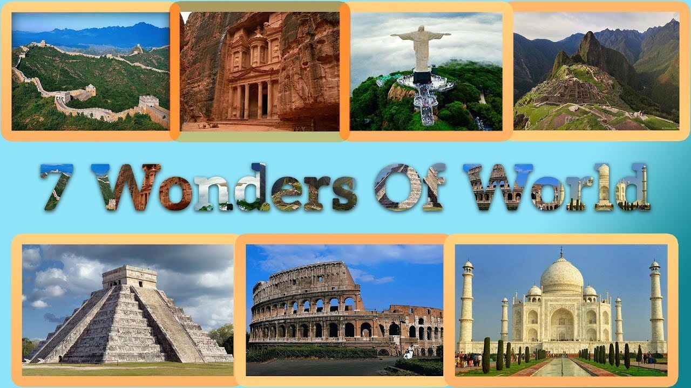

Welcome to my site. This site provides some information about the 7 wonder of the world.
Various lists of the Wonders of the World have been compiled from antiquity to the present day, to catalogue the world's most spectacular natural wonders and manmade structures.
The Seven Wonders of the Ancient World is the first known list of the most remarkable creations of classical antiquity; it was based on guidebooks popular among Hellenic sightseers and only includes works located around the Mediterranean rim and in Mesopotamia. The number seven was chosen because the Greeks believed it represented perfection and plenty, and because it was the number of the five planets known anciently, plus the sun and moon.Many similar lists have been made.
The current images of all the wonders.

New Information
In 2000 a Swiss foundation launched a campaign to determine the New Seven Wonders of the World. Given that the original Seven Wonders list was compiled in the 2nd century BCE—and that only one entrant is still standing (the Pyramids of Giza)—it seemed time for an update. And people around the world apparently agreed, as more than 100 million votes were cast on the Internet or by text messaging. The final results, which were announced in 2007, were met with cheers as well as some jeers—a number of prominent contenders, such as Athens’s Acropolis, failed to make the cut. Do you agree with the new list?
Have a good day!!